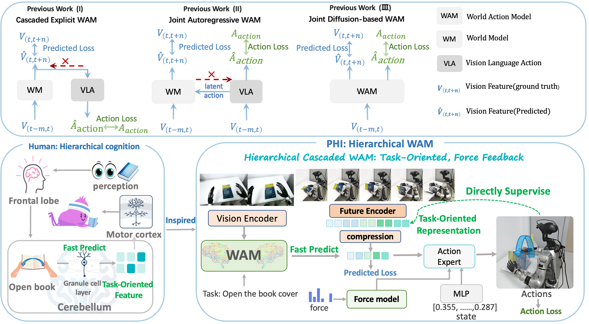
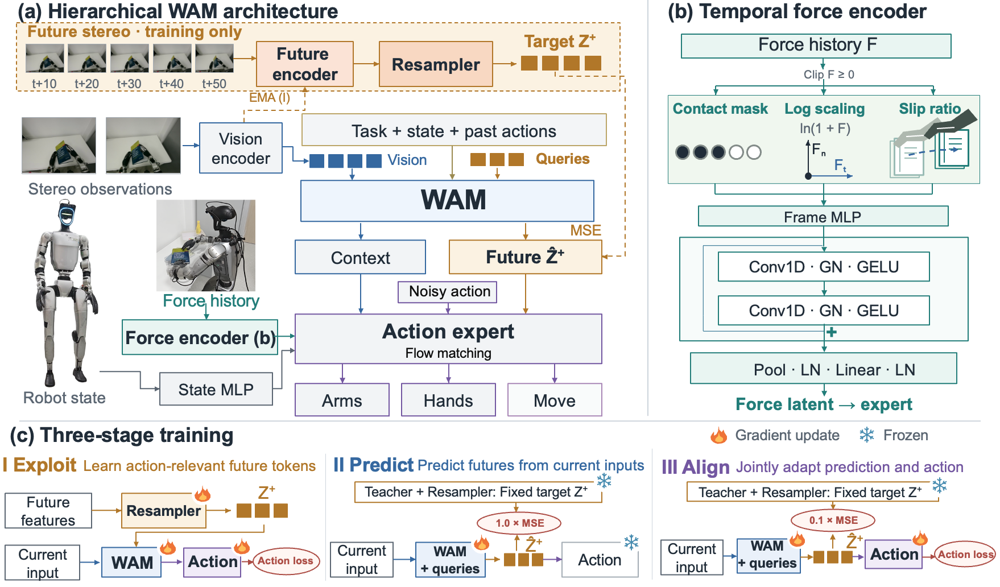
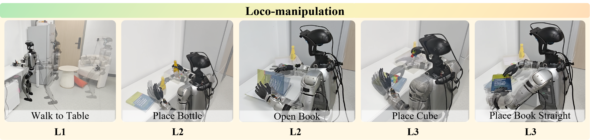
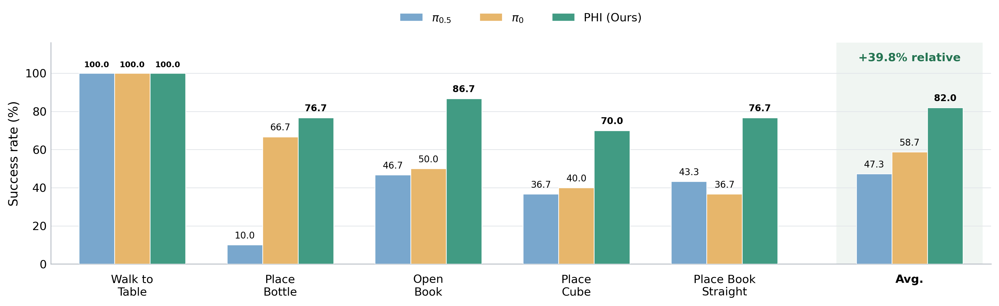
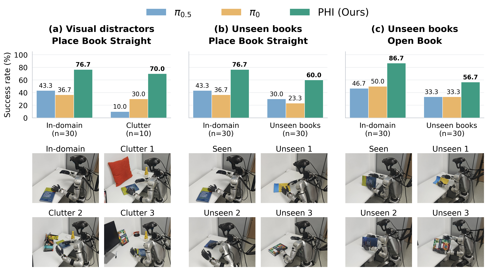
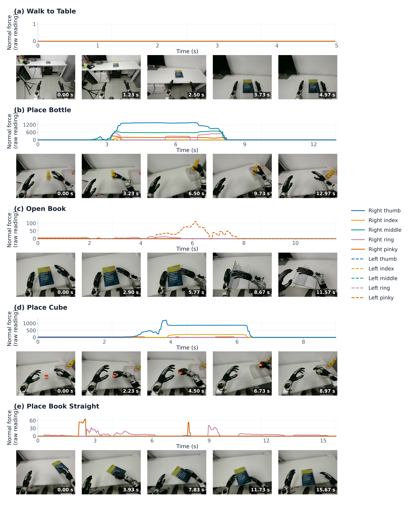
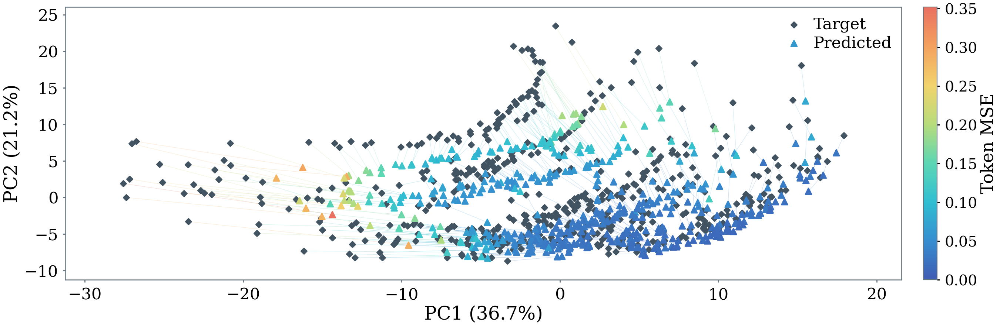

Exploit
Use privileged future stereo observations to learn a future representation shaped by downstream action loss.
Action-grounded targetPHI learns compact, task-oriented future representations and combines them with temporal force feedback to guide robust bimanual manipulation on a real humanoid robot.
Future observations contain more information than a controller needs. PHI first learns which future features are useful for action generation, then trains a causal predictor to infer those features from the current interaction context. Temporal force feedback adds information about contact that is difficult to recover from vision alone.
“What future information should be preserved to support the next action?”

At deployment, PHI uses only current observations, language, robot state and recent force history. The privileged future-observation pathway exists only during training.

Use privileged future stereo observations to learn a future representation shaped by downstream action loss.
Action-grounded targetDistill the target into the WAM so the current interaction context predicts future action-relevant tokens.
Causal predictionReplace the privileged target with the predicted representation and jointly optimize prediction and action generation.
Closed-loop controlPHI encodes force history with log scaling, contact masks and slip ratios, producing a force latent that complements the predicted future visual representation.
Unitree G1 · 29 DoF · dual BrainCo dexterous hands · head-mounted binocular RGB camera

No intentional object contact.
Stable grasp and placement.
Lift the cover while stabilizing the book.
Friction-regulated grasp and placement.
Sliding, translation and rotation from varied initial poses.
30 real-robot trials per task and method · 150 trials per method overall

Distribution shifts test whether PHI relies on memorized appearance or tracks the underlying interaction.

Irrelevant objects vary in identity and position around the target.
Place Book Straight with held-out cover, thickness and material.
Open Book on the same three held-out books.
Force history complements predictive vision during contact establishment, loading, sliding and interaction changes.

Ablations and qualitative analyses connect representation learning to action behavior.
Contact regulation degrades on Place Book Straight.
Planning the next manipulation phase becomes less reliable.

Selective future prediction gives the policy anticipatory context; temporal force feedback keeps it grounded in physical interaction.
Cite PHI ↓Project page placeholder for the ICLR 2027 submission.
@inproceedings{phi2027,
title = {PHI: A Hierarchical World Action Model with
Selective Prediction and Force Feedback},
booktitle = {International Conference on Learning Representations},
year = {2027}
}